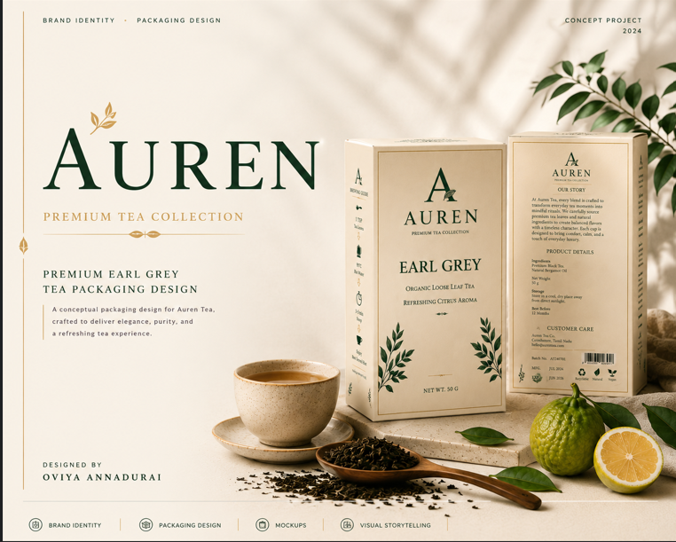
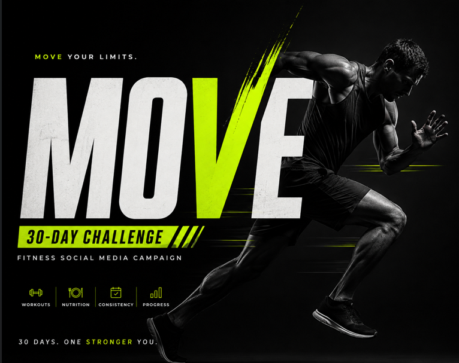
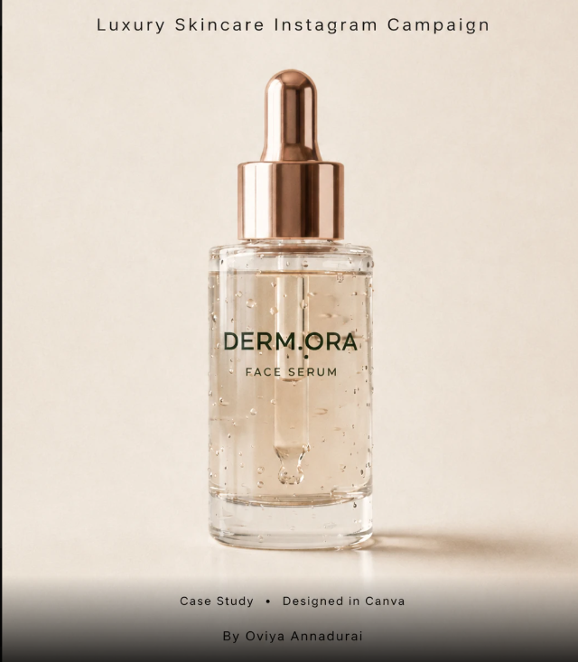
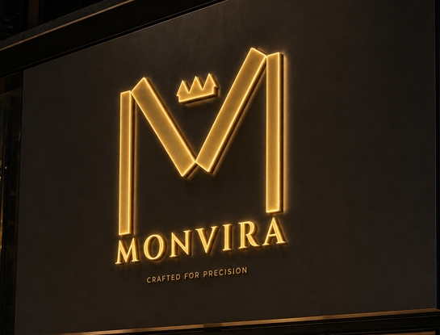
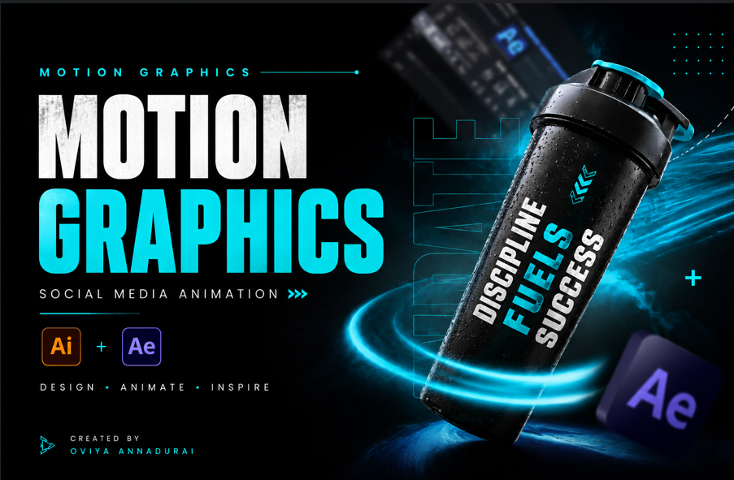
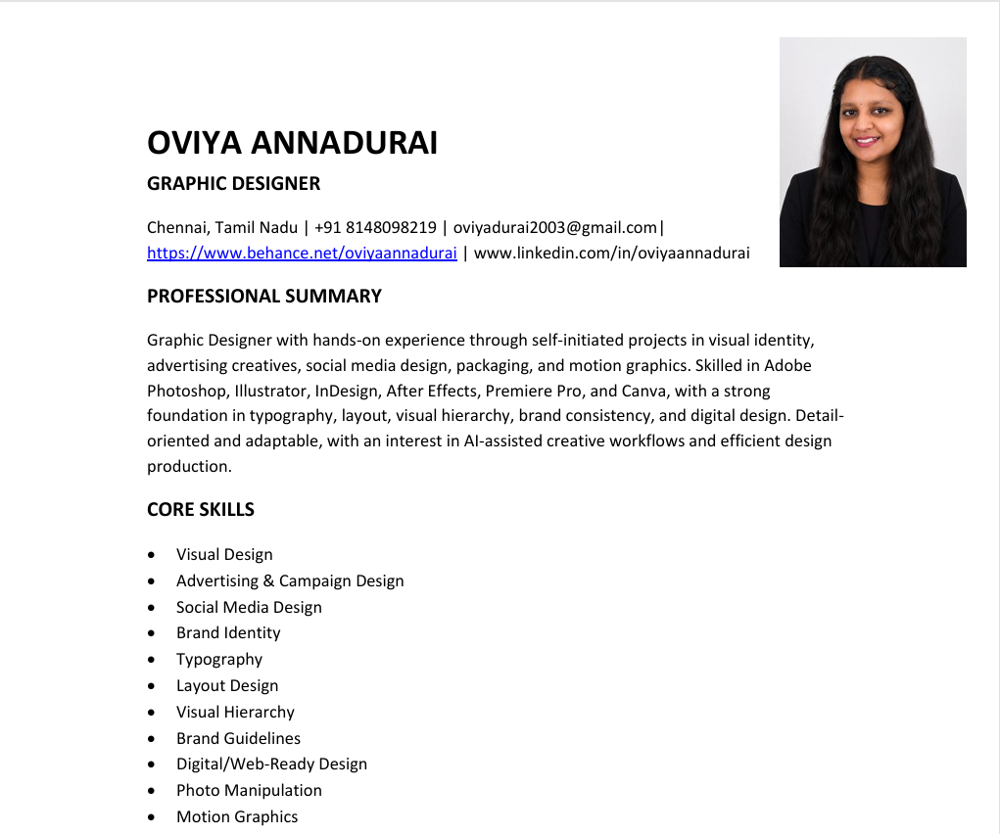

Branding, packaging, social media, print design and motion — creating clean, purposeful and visually engaging design solutions.
View Behance Portfolio →I’m Oviya Annadurai, a Graphic Designer focused on branding, packaging, social media, print design and visual communication.
I enjoy turning ideas into clear and visually compelling designs — from developing brand identities and packaging systems to creating advertising campaigns, social media content and motion graphics.
Logo Design
Brand Identity
Visual Systems
Typography
Art Direction
Packaging Design
Dieline Development
Label Design
Mockups
Print Production
Social Media Design
Advertising Creatives
Campaign Design
Carousel Design
YouTube Thumbnails
Motion Graphics
Social Media Animation
Basic Video Editing
After Effects
Photoshop
Illustrator
InDesign
After Effects
Premiere Pro
Canva

Premium Earl Grey tea concept built around elegance, refinement and botanical freshness. Sophisticated typography, botanical illustration and a restrained palette create a premium tea experience.

A 30-day fitness campaign using bold typography, athlete imagery and dynamic visual elements to communicate energy, movement and consistency.

A clean, premium skincare campaign focused on product presentation, editorial typography and consistent visual hierarchy across social media.

A luxury watch identity exploring precision, sophistication and timeless design through refined typography and premium visual language.

A short-form motion project transforming static graphic elements into engaging digital content through typography, transitions and timing.
An attention-focused thumbnail concept built around strong composition, contrast and immediate visual hierarchy.
boAt Speaker · Waffle · Dairy Milk · Gaming Earbuds
Luxury Fashion Instagram Carousel
Delivery Rider Character Design
Leo movie poster
Solid understanding of typography, layout, hierarchy, color and visual communication.
Comfortable working across branding, packaging, social media, print, thumbnails and motion graphics.
I can adapt to new tools, workflows and brand guidelines quickly and apply feedback directly.
I focus on consistency, alignment, readability and clean final execution.
Open to feedback, comfortable with revisions and focused on delivering work on deadline.
Looking for an opportunity where I can contribute as a designer while continuously improving my creative and motion skills.
Download my latest resume for a concise overview of my education, design skills, software knowledge and project experience.
Download Resume →
Audience, objective, brand personality and communication challenge.
References, competitors, typography, imagery and creative directions.
Composition, typography, color, imagery and visual hierarchy.
Consistency, clarity and removal of unnecessary visual elements.
Final design prepared for digital, social, print or motion.
Available for Graphic Designer / Junior Graphic Designer opportunities.
Behance → LinkedIn →